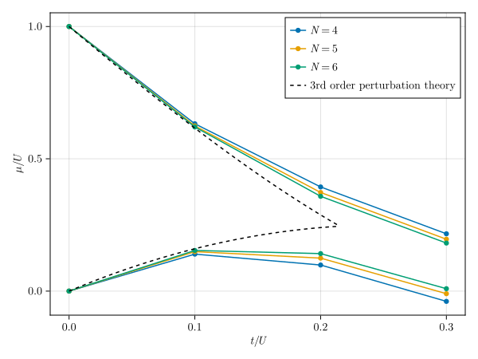

Phase diagram of the Bose-Hubbard chain
The Bose-Hubbard model is the paradigmatic lattice model for strongly-correlated bosons. On a one-dimensional chain with $N$ sites and periodic boundary conditions, it reads
\[H = -t \sum_{i=1}^{N} \left( b_i^\dagger b_{i+1} + \mathrm{h.c.} \right) + \frac{U}{2} \sum_{i=1}^{N} \hat{n}_i(\hat{n}_i - 1) - \mu \sum_{i=1}^{N} \hat{n}_i\,,\]
where $b_i^\dagger$ ($b_i$) creates (annihilates) a boson on site $i$, $\hat{n}_i = b_i^\dagger b_i$ is the local number operator, $t$ is the hopping amplitude, $U$ is the on-site repulsion, and $\mu$ is the chemical potential. Competition between kinetic energy ($t$) and interaction energy ($U$) drives a quantum phase transition between a gapped Mott insulator at integer filling and a gapless superfluid. The phase boundary in the $(t/U, \mu/U)$ plane forms characteristic lobes, one for each integer occupation $n_0$.
In this example we map out the first Mott lobe ($n_0 = 1$) using two approaches: an analytic mean-field approximation and finite-size exact diagonalization (ED) using a particle-number-conserved basis built with SymBasis.jl.
Boundaries from the third-order perturbation theory
Within the third-order strong-coupling expansion around the atomic limit ($t/U \to 0$)[Freericks_1994], the upper and lower boundaries of the $n_0$-th Mott lobe are given by
\[\mu_+/U = 1 - 2 (n_0 + 1) \tilde{t} + n_0^2 \tilde{t}^2 + n_0 (n_0 + 1) (n_0 + 2) \tilde{t}^3\,,\]
and
\[\mu_-/U = 2 n_0 \tilde{t} - (n_0 + 1)^2 \tilde{t}^2 + n_0 (n_0 + 1) (n_0 - 1) \tilde{t}^3\,,\]
where $\tilde{t} = t/U$ is the dimensionless hopping strength. These expressions are obtained by computing the energy cost of adding or removing a particle from the Mott state, treating the hopping term as a perturbation.
U = 1.0 # on-site interaction strength
function per_th_μₛ(n₀, t, U)
tilde_t = t / U
return begin
1-2 * (n₀ + 1) * tilde_t + n₀^2 * tilde_t^2 + n₀ * (n₀ + 1) * (n₀ + 2) * tilde_t^3,
2 * n₀ * tilde_t - (n₀ + 1)^2 * tilde_t^2 + n₀ * (n₀ + 1) * (n₀ - 1) * tilde_t^3
end
end
pt_tₛ = range(0.0; stop=0.215, length=100)
pt_μₛ = per_th_μₛ.(1 |> Ref, pt_tₛ, U |> Ref)
pt_μ_plusₛ = pt_μₛ .|> first
pt_μ_minusₛ = pt_μₛ .|> last100-element Vector{Float64}:
0.0
0.004324568921538619
0.008611406999285788
0.012860514233241506
0.017071890623405774
0.021245536169778596
0.025381450872359965
0.029479634731149885
0.033540087746148355
0.037562809917355375
⋮
0.23902796653402714
0.23991902867054382
0.24077235996326904
0.24158796041220285
0.24236583001734516
0.24310596877869606
0.2438083766962555
0.24447305377002346
0.2451Boundaries from exact diagonalization
The ED estimate of the phase boundary is obtained from the finite-size excitation gap. The upper boundary of the $n_0 = 1$ Mott lobe is the energy cost of adding one particle to the $n_0 = 1$ ground state,
\[\mu_+ = E_0(N, N+1) - E_0(N, N)\,,\]
and the lower boundary is the energy cost of removing one particle,
\[\mu_- = E_0(N, N) - E_0(N, N-1)\,,\]
where $E_0(N, n)$ denotes the ground-state energy of the system with $N$ sites and $n$ particles. As the system approaches the superfluid phase these gaps close and the lobe shrinks. We compute these quantities for several system sizes to observe the finite-size convergence toward the thermodynamic limit.
Nₛ = 4:6; # total number of sites for which to compute the phase diagram
tₛ = 0.0:0.1:0.3; # hopping strength range for which to compute the phase diagram0.0:0.1:0.3Defining the DoF-object and particle-number-conserved basis
For bosons with a local Hilbert space of dimension $n_\mathrm{max} + 1$ (occupation numbers $0, 1, \ldots, n_\mathrm{max}$), SymBasis provides the predefined Boson DoF-object. We construct the basis by combining three symmetry groups: particle-number conservation TotalBosonicNumber to select states with a fixed particle number $n$, translational symmetry Translational to reduce the Hilbert space by fixing the quantum momentum number $k$, and spatial reflection symmetry SpatialReflection to include spatial parity sectors with the parity numbers $p = \pm 1$. These symmetries are composed to form the combined symmetry group, and we build the symmetry-resolved basis and assemble the Hamiltonian in each sector $(N, n, k, p)$ for $n \in \{N-1, N, N+1\}$, sweeping over both system sizes and hopping values.
using SymBasis
using LinearAlgebra, SparseArrays, Arpack
# initialize array to store ground state energies for each (t, N, n_particles)
evalₛ = fill(Inf, length(tₛ), length(Nₛ), 3)
# parameters for DoF object
n_max = 3 # maximum occupation number per site
# loop over the parameter space and compute ground state energies
for (id_t, t) in enumerate(tₛ)
for (id_N, N) in enumerate(Nₛ)
for (id_n, n_particles) in enumerate((N-1):(N+1))
# consider all translation and parity quantum numbers
k_values = (N % 2 == 0) ? [0, Int(N // 2)] : [0]
p_values = [-1, 1]
for k in k_values, p in p_values
# construct the symmetry-resolved basis
dofo = dof_object(Boson(n_max))
pn_sg = sym(TotalBosonicNumber(n_particles, N), dofo)
T_sg = sym(Translational(k, mod1.((1:N) .+ 1, N)), dofo)
P_sg = sym(SpatialReflection(p, mod1.(N .- (1:N) .+ 1, N)), dofo)
csg = pn_sg ∘ T_sg ∘ P_sg
ba = basis(dofo, N, csg)
hilbert_dim = length(ba.states)
# initialize vectors to store the row indices, column indices, and values
I_vec = Int64[]
J_vec = Int64[]
V_vec = ComplexF64[]
for (n, sₙ) in enumerate(ba.states)
Nₙ = ba.norms[n]
# diagonal interaction term
for n_xᵢ in eachdigit(sₙ, N)
if n_xᵢ > 0
push!(I_vec, n)
push!(J_vec, n)
push!(V_vec, 0.5 * U * n_xᵢ * (n_xᵢ - 1))
end
end
# off-diagonal hopping terms
for xᵢ in 1:N
xᵢ₊₁ = mod1(xᵢ + 1, N)
n_xᵢ = read(sₙ, xᵢ)
n_xᵢ₊₁ = read(sₙ, xᵢ₊₁)
# annihilate at xᵢ₊₁, create at xᵢ: b†ᵢbᵢ₊₁|…,n_xᵢ,n_xᵢ₊₁,…⟩ = √(n_xᵢ+1)√n_xᵢ₊₁|…,n_xᵢ+1,n_xᵢ₊₁-1,…⟩
if n_xᵢ₊₁ > 0 && n_xᵢ < n_max
temp_s₁ = dec(sₙ, xᵢ₊₁)
temp_s₁ = inc(temp_s₁, xᵢ)
rep_s₁, rep_fac₁ = representative(temp_s₁, ba)
m = state_index(ba, rep_s₁)
if m !== nothing
Nₘ = ba.norms[m]
ladder_fac₁ = sqrt(n_xᵢ + 1) * sqrt(n_xᵢ₊₁)
all_fac = -t * ladder_fac₁ * sqrt(Nₘ / Nₙ) * rep_fac₁
push!(I_vec, m)
push!(J_vec, n)
push!(V_vec, all_fac)
end
end
# annihilate at xᵢ, create at xᵢ₊₁: b†ᵢ₊₁bᵢ|…,n_xᵢ,n_xᵢ₊₁,…⟩ = √n_xᵢ√(n_xᵢ₊₁+1)|…,n_xᵢ-1,n_xᵢ₊₁+1,…⟩
if n_xᵢ > 0 && n_xᵢ₊₁ < n_max
temp_s₂ = dec(sₙ, xᵢ)
temp_s₂ = inc(temp_s₂, xᵢ₊₁)
rep_s₂, rep_fac₂ = representative(temp_s₂, ba)
m = state_index(ba, rep_s₂)
if m !== nothing
Nₘ = ba.norms[m]
ladder_fac₂ = sqrt(n_xᵢ) * sqrt(n_xᵢ₊₁ + 1)
all_fac = -t * ladder_fac₂ * sqrt(Nₘ / Nₙ) * rep_fac₂
push!(I_vec, m)
push!(J_vec, n)
push!(V_vec, all_fac)
end
end
end
end
# construct and symmetrize the sparse Hamiltonian matrix
h = sparse(I_vec, J_vec, V_vec, hilbert_dim, hilbert_dim)
h .+= h'
h ./= 2
# compute ground state energy
gs_energy = begin
try
eigs(h, nev=1, which=:SR) |> first |> first |> real
catch
eigvals(h |> collect) |> first |> real
end
end
# store the minimum ground state energy across all symmetry sectors
if gs_energy < evalₛ[id_t, id_N, id_n]
evalₛ[id_t, id_N, id_n] = gs_energy
end
end
end
end
endBuilding the Hamiltonian with OperatorAlgebra.jl
The Hamiltonian above can also be assembled more compactly with OperatorAlgebra.jl, which builds an operator expression from single-site Ops and lets SymBasis project it onto the symmetry-resolved basis via sparse(H, ba) (see the PXP example for the spin-operator version of this approach). OperatorAlgebra.jl only ships spin-1/2 operator constants such as PAULI_X, so for bosons we build the ladder-operator matrices ourselves on the local $(n_\mathrm{max}+1)$-dimensional Fock space $\{|0\rangle,\ldots,|n_\mathrm{max}\rangle\}$. Since Boson(n_max) states store the occupation number directly as the digit value (as used via read(sₙ, xᵢ) above), a hand-built Op(mat, site) works out of the box:
using OperatorAlgebra
b_mat = diagm(1 => sqrt.(1:n_max)) # annihilation: b|n⟩ = √n|n-1⟩
bd_mat = b_mat' # creation: b†|n⟩ = √(n+1)|n+1⟩
nn1_mat = Diagonal((0:n_max) .* (-1:n_max-1)) |> Matrix # n̂(n̂-1)4×4 Matrix{Int64}:
0 0 0 0
0 0 0 0
0 0 2 0
0 0 0 6For a representative sector, e.g. $N$ sites at unit filling ($n = N$) with momentum $k=0$ and parity $p=+1$, the basis and Hamiltonian are then
N_demo, n_demo, t_demo = last(Nₛ), last(Nₛ), last(tₛ)
dofo = dof_object(Boson(n_max))
pn_sg = sym(TotalBosonicNumber(n_demo, N_demo), dofo)
T_sg = sym(Translational(0, mod1.((1:N_demo) .+ 1, N_demo)), dofo)
P_sg = sym(SpatialReflection(1, mod1.(N_demo .- (1:N_demo) .+ 1, N_demo)), dofo)
csg = pn_sg ∘ T_sg ∘ P_sg
ba = basis(dofo, N_demo, csg)
H = sum(
-t_demo * (Op(bd_mat, i) * Op(b_mat, mod1(i + 1, N_demo)) +
Op(b_mat, i) * Op(bd_mat, mod1(i + 1, N_demo)))
for i in 1:N_demo
) + sum(0.5 * U * Op(nn1_mat, i) for i in 1:N_demo)
h_opalg = sparse(H, ba; check_hermitian=false)
h_opalg = (h_opalg + h_opalg') / 237×37 SparseArrays.SparseMatrixCSC{ComplexF64, Int64} with 214 stored entries:
⎡⢻⢖⣄⠢⡀⠄⡐⠀⠀⠀⠀⠀⠀⠀⠀⠀⠀⠀⠀⎤
⎢⠠⡙⠑⣤⢌⠐⠀⠀⠀⠀⡠⠀⠀⠀⠀⠀⠀⠀⠀⎥
⎢⠀⠌⢂⠑⡻⢎⡢⠌⢂⠀⠕⢄⠀⠀⠈⠐⢀⠀⠀⎥
⎢⠐⠈⠀⠀⡈⠎⠟⢅⣄⠁⠐⠠⢡⠀⠈⠀⠀⡀⠀⎥
⎢⠀⠀⠀⠀⠈⠐⠄⠙⢵⢗⠀⠀⠀⠑⠄⠁⠂⠀⠀⎥
⎢⠀⠀⠀⠊⠑⢅⠐⡀⠀⠀⡻⢎⡪⢂⠐⡈⠀⠀⠀⎥
⎢⠀⠀⠀⠀⠀⠀⠁⠒⢄⠀⠪⢊⢱⢖⡕⠀⠀⠀⠀⎥
⎢⠀⠀⠀⠀⢂⠀⠂⠀⠄⠁⡐⠠⠑⠉⢟⣵⠱⠦⠁⎥
⎢⠀⠀⠀⠀⠀⠐⠀⠠⠈⠀⠀⠀⠀⠀⠱⡆⠟⢅⠀⎥
⎣⠀⠀⠀⠀⠀⠀⠀⠀⠀⠀⠀⠀⠀⠀⠁⠀⠀⠀⠀⎦As with the manual construction above, the normalization factors $\sqrt{N_m/N_n}$ are only Hermitian up to floating-point round-off, so we disable sparse's built-in exact-equality Hermiticity check and symmetrize explicitly. Up to that round-off, h_opalg reproduces the same matrix as the manual I_vec/J_vec/V_vec construction above, and can be substituted directly for it inside the sweep over $(t, N, n, k, p)$ if the more declarative OperatorAlgebra style is preferred.
Extracting the phase boundaries
The upper and lower chemical-potential boundaries of the first Mott lobe are obtained from the ground-state energies in the three sectors $n \in \{N-1, N, N+1\}$:
ed_μ_plusₛ = (evalₛ[:, :, 3] .- evalₛ[:, :, 2]) ./ U
ed_μ_minusₛ = (evalₛ[:, :, 2] .- evalₛ[:, :, 1]) ./ U4×3 Matrix{Float64}:
6.47543e-16 1.77859e-17 1.28473e-15
0.139657 0.149096 0.153527
0.0985248 0.124565 0.14164
-0.0389188 -0.00985089 0.00904728Plotting the phase diagram
using CairoMakie
fig = Figure()
ax = Axis(fig[1, 1]; xlabel=L"t/U", ylabel=L"\mu/U")
for (id_N, N) in enumerate(Nₛ)
scatterlines!(ax, tₛ ./ U, ed_μ_plusₛ[:, id_N]; color=Cycled(id_N), label=L"N=%$(N)")
scatterlines!(ax, tₛ ./ U, ed_μ_minusₛ[:, id_N]; color=Cycled(id_N))
end
lines!(ax, pt_tₛ ./ U, pt_μ_plusₛ; color=:black, linestyle=:dash, label=L"\text{3rd order perturbation theory}")
lines!(ax, pt_tₛ ./ U, pt_μ_minusₛ; color=:black, linestyle=:dash)
axislegend(ax; position=:rt, merge=true)
fig
- Freericks_1994J. K. Freericks and H. Monien, Phase diagram of the Bose-Hubbard Model, Europhys. Lett. 26, 545 (1994).